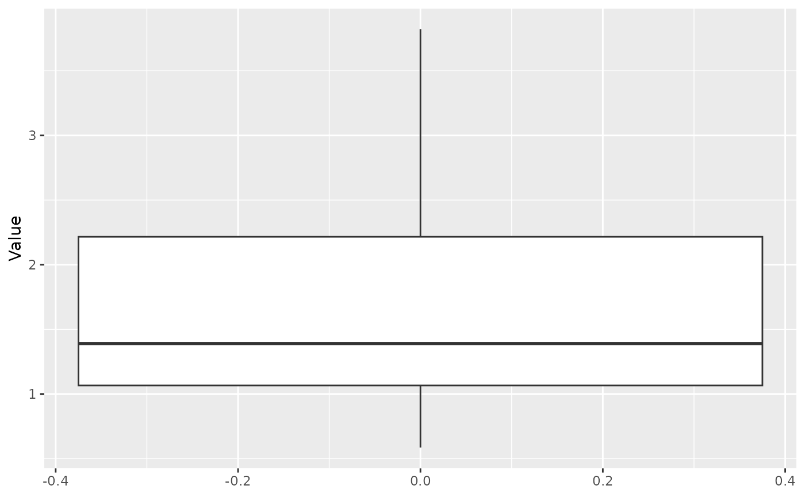
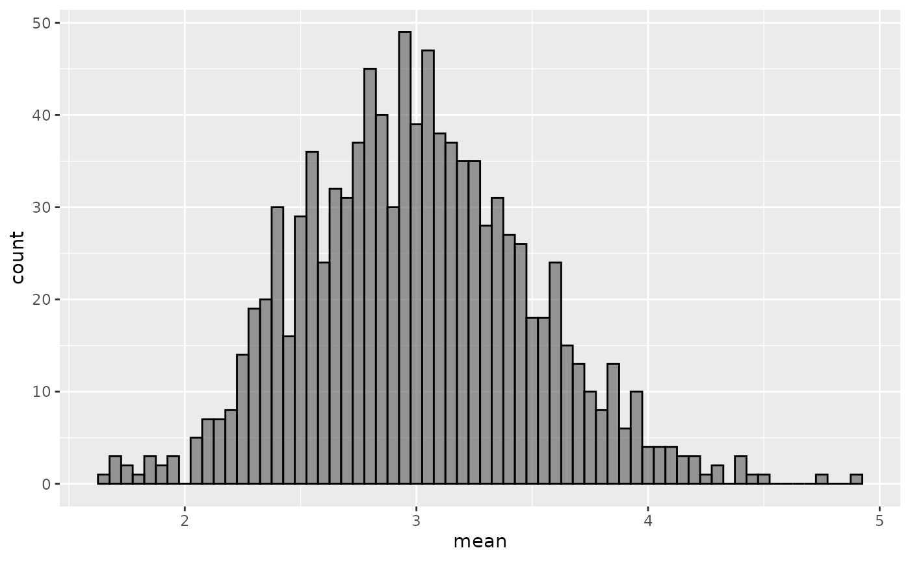
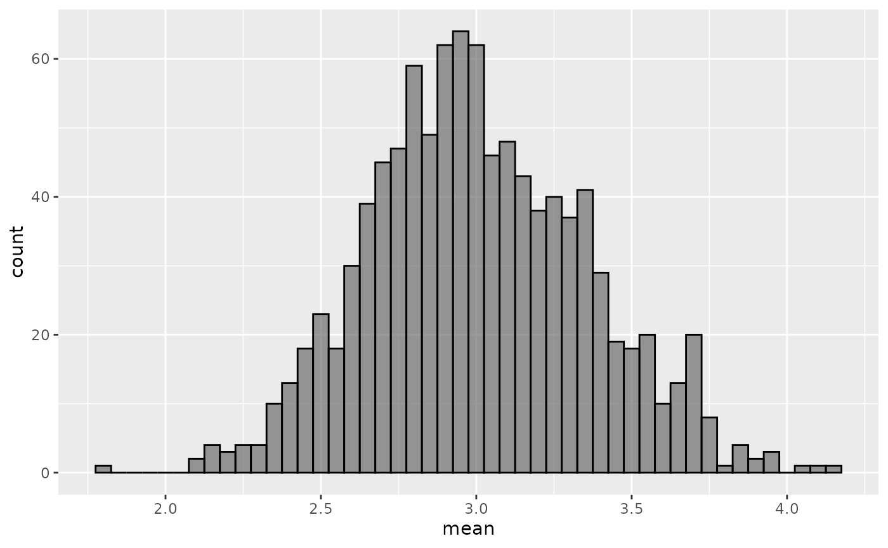
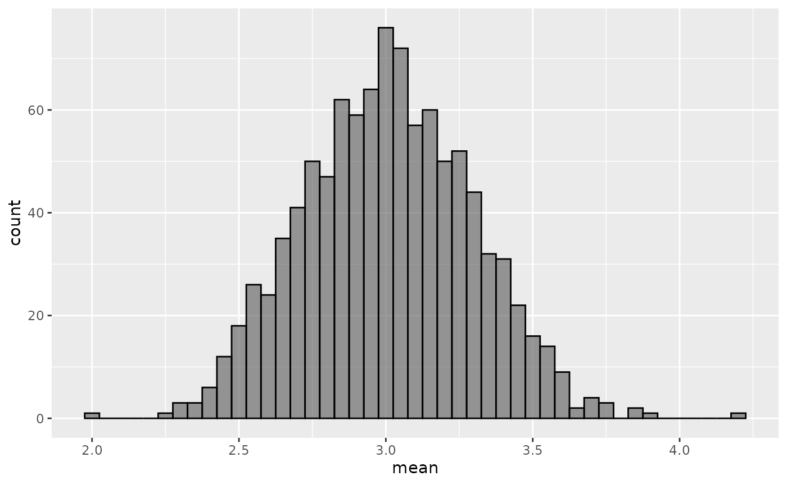
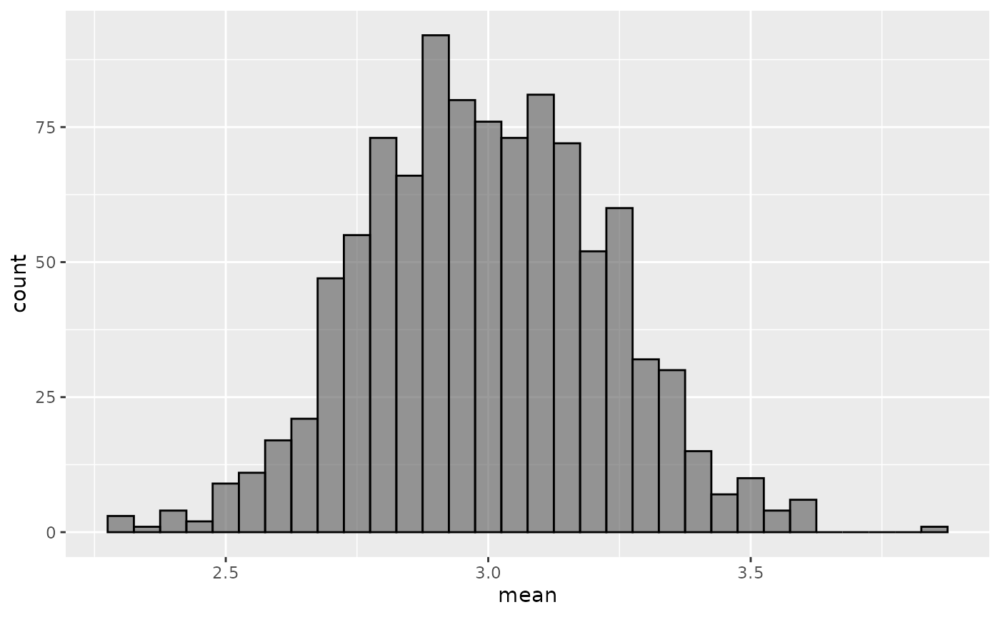
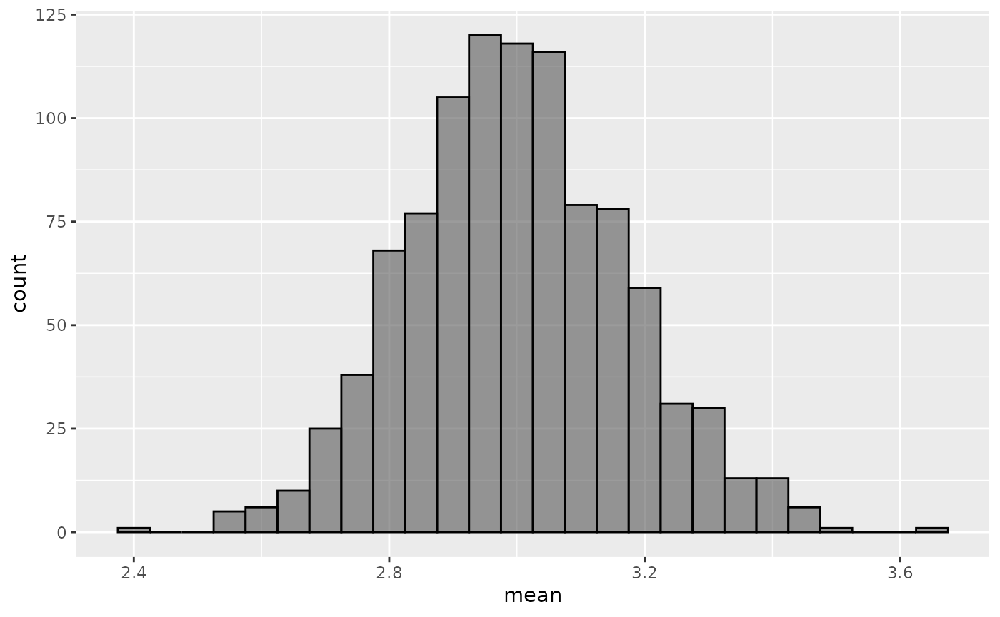

Teaching the Central Limit Theorem
Central_Limit_Theorem.Rmd
#library(edsamplr)
#library(tidyverse)
#library(ggplot2)Introduction
If you would like to teach your students about the Central Limit Theorem, simulating data is a great option. You can show them the distribution of a single sample of skewed data with a small sample size and how the sampling distribution of the mean is still skewed. Then you can repeat this for a medium sample size and then a larger sample size so that they can see how the shape of the sampling distribution changes even when the shapes of the individual samples remains the same.
If you want your students to get even more comfortable with the
Central Limit Theorem, you can have your students practice simulating
data as well. They can change the sample sizes, the number of samples
drawn, and the distributional shape of each set of samples to see how
each of those factors impacts the sampling distribution. The
generate_distribution() function of edsamplr is a great
resource for this because it is a wrapper function for simulating data
from a variety of distributional shapes. The students don’t have to
remember rnorm(), rbinom(),
rgamma(), etc. because they can just name the distribution
in the first argument of the function.
Adding in a scenario about the data being simulated can also help the students grasp the concept more fully because it provides an additional “hook” for your students to latch onto, which will aid in their remembering.
Context
Coconut College is investigating student study habits, particularly how many hours their students spend preparing for their midterm exam in introductory statistics. The administrators conduct a preliminary survey of one section (12 students) as that class meets right outside the administration offices.
n <- 12
alpha <- 3
small_sample <- data.frame(Value = generate_distribution(distribution = "gamma",
n = n,
alpha_shape = alpha,
summary = FALSE))
small_sample %>%
summarize(min = round(min(Value), 3),
q1 = round(quantile(Value, 0.25), 3),
median = round(median(Value), 3),
q3 = round(quantile(Value, 0.75), 3),
max = round(max(Value), 3),
mean = round(mean(Value), 3),
sd = round(sd(Value), 3))
#> min q1 median q3 max mean sd
#> 1 0.586 1.066 1.39 2.216 3.821 1.724 1.037
small_sample %>%
ggplot(aes(y = Value)) +
geom_boxplot()
It is revealed that students study about 1.724 hours on average. Administrators are concerned that this may be too low. When they seek your support, you note that 12 students is not a large or representative sample since this is a required course that serves hundreds of students each year.
You remember that the Central Limit Theorem says that as the sample size increases, the sampling distribution of the mean becomes close to normal, even if the underlying distribution is skewed. Knowing that amount of study time must be positive, continuous, and is likely right skewed, you decide to simulate sample data from a gamma distribution with various sample sizes to help you make a decision about what your sample size should be.
You start with 12 since that was the sample size of the preliminary survey and simulate 1,000 samples.
replications <- 1000
small_sample_list <- replicate(replications,
expr = generate_distribution(distribution = "gamma",
n = n,
alpha_shape = alpha,
summary = FALSE),
simplify = FALSE)
small_sampling_dist <- data.frame(sample = seq(1:replications),
mean = sapply(small_sample_list, mean, na.rm = TRUE))
small_sampling_dist %>%
ggplot(aes(x = mean)) +
geom_histogram(binwidth = 0.05, alpha = 0.6, color = "black")
You feel affirmed in your original thought that a sample size of 12 is not large enough. You decide to double the sample size and see what the sampling distribution of the mean looks like for another 1,000 samples.
n <- 24
medium_sample_list <- replicate(replications,
expr = generate_distribution(distribution = "gamma",
n = n,
alpha_shape = alpha,
summary = FALSE),
simplify = FALSE)
medium_sampling_dist <- data.frame(sample = seq(1:replications),
mean = sapply(medium_sample_list, mean, na.rm = TRUE))
medium_sampling_dist %>%
ggplot(aes(x = mean)) +
geom_histogram(binwidth = 0.05, alpha = 0.6, color = "black")
That looks closer to normal, but you feel confident that the Central Limit Theorem will not let you down. You decide to add another dozen to your sample size.
n <- 36
large_sample_list <- replicate(replications,
expr = generate_distribution(distribution = "gamma",
n = n,
alpha_shape = alpha,
summary = FALSE),
simplify = FALSE)
large_sampling_dist <- data.frame(sample = seq(1:replications),
mean = sapply(large_sample_list, mean, na.rm = TRUE))
large_sampling_dist %>%
ggplot(aes(x = mean)) +
geom_histogram(binwidth = 0.05, alpha = 0.6, color = "black")
This, again, looks better than 12, but not quite where you want it to be. You have just recalled that the Central Limit Theorem has a rule of thumb of n=30, but you know that your underlying distribution won’t be normal. You add 2 more dozen just to see what happens.
n <- 60
extra_large_sample_list <- replicate(replications,
expr = generate_distribution(distribution = "gamma",
n = n,
alpha_shape = alpha,
summary = FALSE),
simplify = FALSE)
extra_large_sampling_dist <- data.frame(sample = seq(1:replications),
mean = sapply(extra_large_sample_list, mean, na.rm = TRUE))
extra_large_sampling_dist %>%
ggplot(aes(x = mean)) +
geom_histogram(binwidth = 0.05, alpha = 0.6, color = "black")
Since you’re just simulating, you decide you might as well try 100.
n <- 100
massive_sample_list <- replicate(replications,
expr = generate_distribution(distribution = "gamma",
n = n,
alpha_shape = alpha,
summary = FALSE),
simplify = FALSE)
massive_sampling_dist <- data.frame(sample = seq(1:replications),
mean = sapply(massive_sample_list, mean, na.rm = TRUE))
massive_sampling_dist %>%
ggplot(aes(x = mean)) +
geom_histogram(binwidth = 0.05, alpha = 0.6, color = "black")
Based on these simulations, you feel a renewed sense of confidence about your decision to rely on the Central Limit Theorem and are ready to go survey some students.